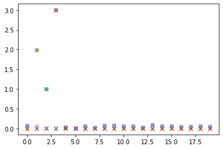
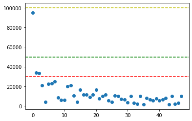

회귀모형 (1)
회귀모형 (2)
\[f_i = 2\times \sin(2\pi t_i) + 1 \times \sin(4\pi t_i) + 3\times\sin(6\pi t_i)+\epsilon_i, \quad t_i = \frac{i}{1000}\]
회귀분석 느낌의 표현은 아래와 같다.
\[y_i = \beta_0 + \beta_1 x_{i1} + \beta_2x_{i2} + \beta_3x_{i3} + \epsilon_i\]
여기서 \(x_{i1} = \sin{2\pi t_i}\) 이고, \(x_{i2} = \sin(4\pi t_i), \quad x_{i3} = \sin(6\pi t_i)\).
- 관측한자료
- observed signal
- 위의 자료를 해석하는 방법
plt.plot(yfft[:20],'o',alpha=0.5)
plt.plot(yfft1[:20],'x',alpha=1,)
plt.plot(yfft2[:20],'x',alpha=1)
plt.plot(yfft3[:20],'x',alpha=1)
plt.plot(epsfft[:20],'x',alpha=1)
- 퓨리에변환 -> threshold -> 역퓨리에변환을 이용한 스킬
삼성전자 주가자료를 스무딩해보기
- 삼성전자 자료
start_date = "2023-01-01"
end_date = "2023-05-02"
y = yf.download("005930.KS", start=start_date, end=end_date)['Adj Close'].to_numpy()[*********************100%***********************] 1 of 1 completed- 스펙트럼
- 처음 50개정도만 관찰
- 첫값이 너무커서 나머지는 잘안보임
- 2번째부터 50번째까지만 관찰
<matplotlib.lines.Line2D at 0x7f85162b57c0>
- 대충 이정도 짜르면 될것같음
- thresholded value
- 퓨리에역변환
array([59664.72193044+8.87311904e-14j, 58572.98839934+8.87311904e-14j,
58066.07369126+3.39894326e-14j, 58169.18671667-6.87747670e-14j,
58706.41986821-1.14383435e-13j])실수화
array([59664.72193044, 58572.98839934, 58066.07369126, 58169.18671667,
58706.41986821])- 적합결과 시각화

- 숙제: treshold value를 관찰하며 시각화해볼것
plt.plot(abs(yfft)[2:50],'o')
plt.axhline(y=30000, color='r', linestyle='--')
plt.axhline(y=50000, color='g', linestyle='--')
plt.axhline(y=100000, color='y', linestyle='--')
plt.show()
- thresholded value
- 퓨리에역변환
yhat1 = np.real(np.fft.ifft(yfft1))
yhat2 = np.real(np.fft.ifft(yfft2))
yhat3 = np.real(np.fft.ifft(yfft3))
yhat1[:5], yhat2[:5], yhat3[:5] (array([60302.63175219, 59674.04944237, 59176.52517726, 58830.97854078,
58648.54453033]),
array([60610.76706766, 60334.04540323, 60094.64069051, 59898.16437304,
59749.22168918]),
array([61926.12309451, 61926.12309451, 61926.12309451, 61926.12309451,
61926.12309451]))- 적합결과 시각화
minor topics
- y의 FFT 결과는 항상 y와 같은길이임
- 에일리어싱: number of observation은 얼마나 세밀한 주파수까지 측정가능하냐를 결정함
예시1: 에일리어싱
<matplotlib.legend.Legend at 0x7f8514838190>
- 실제로는 x2가 더 고주파인데, 같은 주파수처럼 보임
예시2: 에일리어싱이 없는 경우
- 주파수 왜곡떄문에 실제로는 corr ceof = 0 일지라도 관측되는건 corr coef >0 일 수 있음